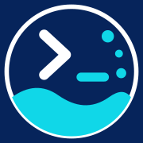
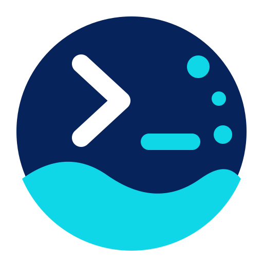

Soda OS
Forgejo asset review · not an installed Forgejo page
Approved artwork, sized for the places it will appear. View at 100% browser zoom. SVGs stay sharp on high-density displays; the favicon samples compare 1× and 2× PNGs at the same 16 CSS pixels. All images are local; no server or network is needed.
Browser tabs and navigation
Light surface
Navigation: 30 × 30 CSS px · SVG · 48 px minimum bar height.
Dark surface
The existing white keyline separates the navy symbol from the dark bar.
Homepage · square symbol option
Soda OS
Your team’s repositories and collaboration.
Soda OS
Your team’s repositories and collaboration.
Homepage · horizontal wordmark option
Your team’s repositories and collaboration.
Your team’s repositories and collaboration.
This is an alternative layout, not a replacement for the square navigation logo. On narrow screens the wordmark scales proportionally to fit.
Touch and app icons
Light surface

Opaque navy; no baked-in rounding.

Transparent app/social fallback. View full-size 512px export
{kind=link}
Dark surface
The platform applies its own mask.
native web-app manifest dimensions. View full-size 512px export